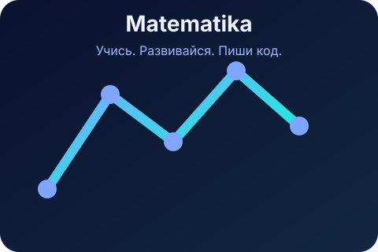

MVP для образования
Matematika
Страница-демонстрация для проекта по математике: лаконичный дизайн, готовая структура и адаптивное оформление.
Что уже есть
Проект готов к быстрому запуску и использованию как основной лендинг для образовательной темы.
- Рабочий `index.html` с содержанием и структурой.
- Адаптивные стили в `assets/css/styles.css`.
- Подготовленный JavaScript-каркас в `assets/js/script.js`.
- Иллюстрация в `assets/img/image.svg`.
Как запустить
Любой может быстро открыть страницу локально и показать проект другим.
- Перейдите в папку проекта.
- Откройте `index.html` напрямую или запустите сервер:
- Откройте в браузере
http://localhost:8000.
python3 -m http.server 8000
Почему это удобно
Matematika — это простая стартовая площадка для веб-продукта: демонстрация, презентация и первый MVP в одном файле.
